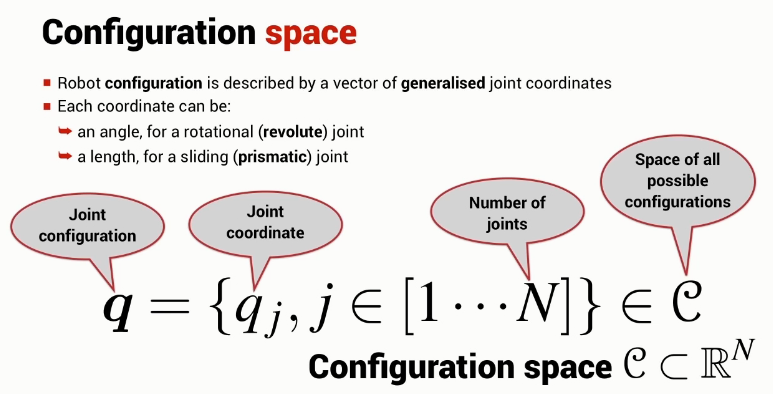

q (joint configuration) is a vector of length N (number of joints) where the elements of q (joint coordinate) are either an angle or a length.
q belongs to the space C (space of all possible configurations), which is a subset of the N dimensional space.

There is also the space of all possible end-effector poses, T.
The dimension of the configuration space is the robots degrees of freedom, i.e. the number of joints.
The dimension of the task space is the degrees of freedom in the task space.
In the three dimensional world (that we and our robots live), it is not possible to have a task space bigger than six.
To reach all of the task space dim C \(>=\) dim T
When dim C > dim T (epically when dim C >> dim T), the shape of the arm can be controlled as well as the position/orientation of the end-effector.